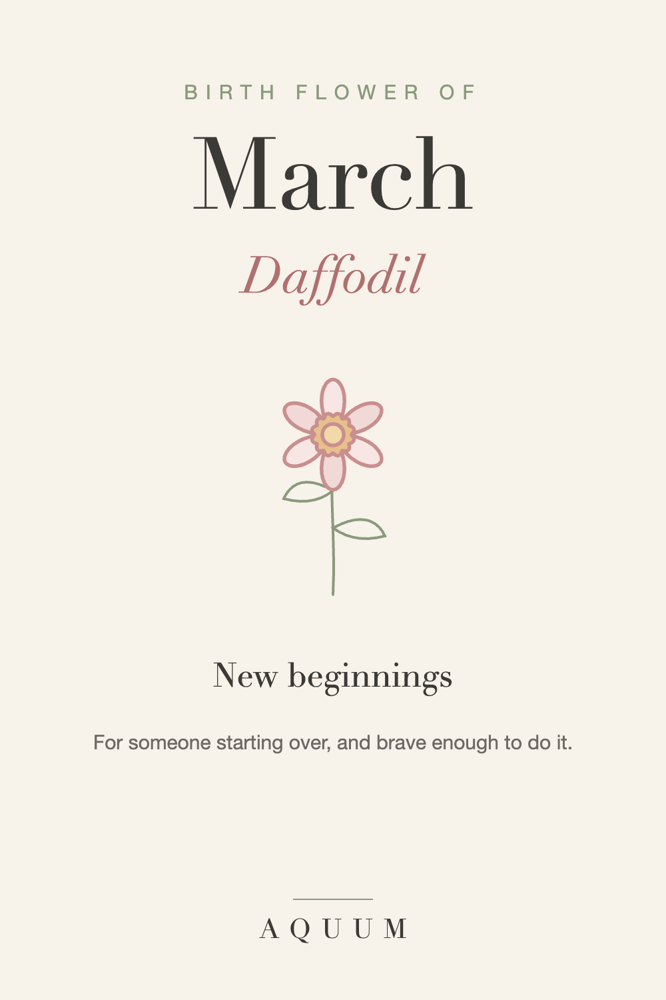

March Birth Flower: Daffodil Meaning and Gift Ideas
2026-09-30
This article may contain affiliate links. How that works.

March's birth flower is the daffodil, with its close relative the jonquil as a second. Few flowers are as tied to their season: when daffodils appear, winter is over.
What the daffodil means
The daffodil stands for new beginnings and hope that comes back. It's also the traditional flower for a 10th wedding anniversary, and the American Cancer Society uses it as its symbol of hope.
A daffodil says: whatever you're starting, I'm glad you're starting it.
The jonquil, March's second flower
The jonquil, a smaller, very fragrant daffodil, carries a softer meaning: affection and desire.
A safety note
All parts of the daffodil, especially the bulbs, are toxic if eaten, to people and to pets. If you're giving bulbs or a potted plant to a home with curious dogs or cats, a daffodil design is the safer choice.
Who the daffodil suits
- Someone born in March
- Anyone starting over: a new job, a move, a recovery, a new baby
- A friend who deserves a quiet "proud of you"
March birth flower gift ideas
- A daffodil shirt, mug or tote, a reminder of the fresh start that lasts all year.
- A pot of forced daffodils to bloom indoors (keep them away from pets).
- A card with the meaning, especially for someone going through a big change.
Looking for a birth flower gift? See the botanical tees at Aquum, one flower for every month.